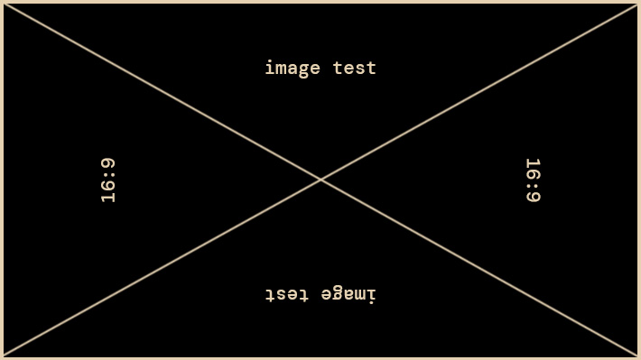

Manual
This is a manual for the template. I tried to be as thorough as possible, but if anything is unclear, let me know!
Table of Contents
- Template layout
- Global style customisation
- Using this template's features
Template layout
Before we begin, let's get familiar with how the template's HTML is constructed.
The <head> is where you'll be changing your <title> (please do this) for the website, meta tags for site previews (optional but recommended), favicon (optional), linking any extra stylesheets or scripts.
The <body> is where all the actual visible content of your HTML page lives, and that's the one you'll be changing the most.
There are 3 main parts in the <body> of this template:
- <header>: The header is only visible on mobile. It's for navigation.
- <main>: This is what you'll be tinkering with the most.
- <footer>: The little strip at the bottom of the page.
Within <main>, there are two columns:
- A sidebar column <div class="sidebar">, which contains:
- The nav bar <nav id="menu">, that's your main navigation.
- Any widget <div class="class"> you want to add.
- A content column <div class="content">, which contains:
- Sections <section>, where all your actual website content lives.
This is what it looks like on desktop, visually:
CSS Basics
I'm not really going to explain how CSS works in this section. If you're completely new to CSS, I suggest you check out W3 Schools' introduction to it. Even as someone who's definitely not new to it, I often end up looking through W3's references because it's easy to forget how things work.
Something basic I want to refresh us all on is the CSS syntax, because I'll be talking about selectors, properties and values a lot.
In this example:
p { color: red; text-align: center; }
- p is a selector in CSS (it points to the HTML element you want to style: <p>).
- color is a property, and red is the property value
- text-align is a property, and center is the property value
Now we're ready to customise!
Customising the template
Unless you're looking to add or change something specific in the template, pretty much the only CSS you'll be looking at and tinkering with is the :root selector, which is the first thing you see when you open the style.css document and looks like this:
/* root settings */ :root { /* column widths */ --widthSidebar: 200px; --widthContent: 800px; /* general page and text colours */ --colorBackground: #020605; --colorText: #f2ead4; --colorLink: #318150; /* accent colours */ --colorPrimary: #318150; --colorSecondary: #f99b36; --colorTertiary: #24211c; /* border and box shadow colours */ --colorBorder: #f2ead4; --colorShadow: #f2ead4; /* background colour for the sections */ --colorBackgroundMain: #020605; /* fonts */ --fontText: 'DM Mono', sans-serif; --fontTitle: 'w95fa', monospace; /* borders */ --borderSolid: 1px solid #f2ead4; --borderDotted: 1px dotted #f2ead4; --borderTree: 1px solid #f2ead4; /* gallery settings */ --columnCount: 2; --columnGap: 8px; /* background image FOR ALL PAGES */ --imageBackground: url('../img/background.png'); }
Most of the values are colours, which should be easy to figure out.
Experiment with changing the values, see what happens! Just don't change the properties, or it'll break the code!
How it works
This template uses CSS variables. By first declaring custom variables in the :root selector and using the var() function as a value in other places of the stylesheet, you can effortlessly change the value wherever the var() function is used, by changing the value in the property declared in :root.
W3 Schools' page on CSS variables is a great resource if you want to understand exactly what this all means.
You can see where all these variables are used throughout the CSS, if you're curious.
Note: If you're self-hosting your fonts, make sure you've included them in the CSS stylesheet using the @font-face rule before changing the fonts settings!
Hot tip: If you're unsure or uninspired re: colour palettes, I made a few palettes you can use or base your own off.
Customise background images
Now that you're familiar with the :root selector, you can see that one of the variable properties is called --imageBackground.
--imageBackground: url('../img/background.png');
You can change the url to be any image you want, just make sure the file path is correct.
If you don't want any backgrounds, just the solid colour you've defined at --colorBackground, change the value to none, like so:
--imageBackground: none;
This applies the same background (or lackthereof) to all pages.
To have a different background on a given page, here's what to do:
- In the HTML file of the page you want a different background on, there is a <style> tag within the head tag.
- Add this in the <style> tag:
:root { --imageBackground: url('../img/YOUR-OTHER-BACKGROUND.png'); }
- That should override the global --imageBackground property, and you'll have YOUR-OTHER-BACKGROUND.jpg as your background on this page, and this page only!
Important Note: This goes for any image you feature on your website, but please don't make your background image too big! If your image file size is too big, it takes way too long to load on people's devices and makes for an unpleasant experience.
This is a fairly arbitrary limit but I'd say your background image's size should be under 1MB, with a maximum width of 2160px (that's 4k resolution, although tbh you don't even need to go that big. 1920px in width is usually just as good.)
Features basics
All the features in this template are made in pure HTML. I've extensively <!-- commented --> the HTML pages so even if you're a beginner, you should be able to get your bearings and figure it all out easily.
In the sections below I'll be presenting these features and a boilerplate for you to easily copy and paste into your own HTML pages.
Half-width-sections
By default, sections in this template are full-width, which means they occupy the entire space they have in the content column.
You can change the class of the sections to make them half-width, which is nice if you want to have little bits of text or images here and there on your website.
Half-width section / Example A
Here's a live example of what half-width sections look like. You can use them for little things, like quotes, status updates, or displaying a favourite song/album.
Note: On mobile view, half-width sections stack on top of each other.
Half-width section / Example B
You can insert images too! The cool thing is that your two sections will always have matching heights regardless of content.
Boilerplate
Copy/Paste this bit of code into your <div class="content"> tag to create 2 half-width sections in your website, then fill with your own content.
<div class="half-width">
<section>
<h2>Title</h2>
</section>
<section>
<h2>Title</h2>
</section>
</div>
In-section text/image layouts
Sometimes you want to spice up your sections and have images next to a paragraph in a ~tasteful~ way...
You can use a simple column-based layout to have images on the right...
Or on the left.
I used this layout for my about page, and I think it'd work for any page where you want to display both images and text in a ~cool~ way fairly effortlessly.
Note: This layout collapses and the columns stack on top of each other on mobile view.
Boilerplate
Copy/Paste these bits of code into <section> to set up two-column layouts in the section of your choice, then fill with your own content.
Image on the right:
<div class="flex-columns">
<div class="flex-text">
<p>Text here</p>
</div>
<div class="flex-image">
<img src="img/">
</div>
</div>
Image on the left:
<div class="flex-columns">
<div class="flex-image">
<img src="img/">
</div>
<div class="flex-text">
<p>Text here</p>
</div>
</div>
Preview frame
A preview frame is great for linking a subpage or any other page with a little preview image next to the link and a description.
I'm currently using this to link to my art galleries, and I think it's neat!
You can make this title a link!
This is an example of the Preview Frame with a 16:9 horizontal preview image. I recommend not making this image too wide. 16:9 is the widest recommended aspect ratio for inserting in a Preview Frame.

Another example
This is an example of the Preview Frame with a 4:3 vertical preview image. I recommend not making this image too long. 4:3 is the tallest recommended aspect ratio for inserting in a Preview Frame.
Boilerplate
Copy/Paste this bit of code into <section> to set up a preview frame, then fill with your own image and content.
<div class="preview-frame"> <a href="#preview-frame"><img src="img/"></a> <div> <h3>Title</h3> <p>Description</p> </div> </div>
Image grid
A deceptively simple grid of images.

To change image grid settings, look for these :root settings in the CSS file:
/* gallery settings */ --columnCount: 2; --columnGap: 8px;
- --columnCount is the number of columns.
- --columnGap is the space between the images.
Boilerplate
Copy/Paste this bit of code into a <section> to set up an image gallery, and complete with your own image file names.
<div class="gallery"> <img src="img/"> <img src="img/"> <img src="img/"> <img src="img/"> <div>
Lists
I don't know about you, but I love lists, and I use different types of lists for different purposes.
Arrow lists
The arrow list is an unordered list with an arrow instead of the usual round marker in front of the list items.
I use arrow lists for listing thoughts, sentences that are loosely related to each other... and sometimes just because it looks cool.
For example:
- Here's a thing.
- Here's a second thing.
- Here's a third thing.
To turn a list into an arrow list, simply type class="arrow-list" within the <ul> tag, so it looks like:
<ul class="arrow-list"> <li>Here's a thing.</li> <li>Here's a second thing.</li> <li>Here's a third thing.</li> <ul>
To-do lists
The to-do list is an unordered list with an box instead of the usual round marker in front of the list items.
I use to-do lists for, well, listing tasks I want done. And when I'm done with them, I can tick them off!
For example:
- Send letter
- Water plants
- Make dinner
To turn a list into an arrow list, simply type class="todo-list" within the <ul> tag, so it looks like:
<ul class="todo-list"> <li>Send letter</li> <li>Water plants</li> <li>Make dinner</li> <ul>
To mark a list item as "done", add class="task-done" within the <li> tag:
<ul class="todo-list"> <li>Send letter</li> <li>Water plants</li> <li class="task-done">Make dinner</li> <ul>